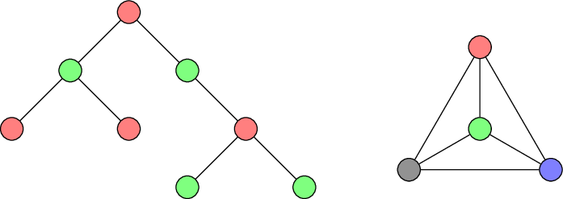
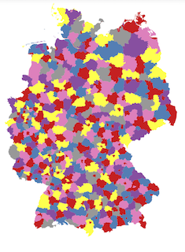
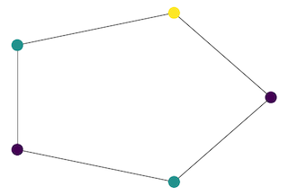

Partitioning¶
Graph partitioning deals with ways to partition the vertex set or the edge set of a graph into mutually exclusive groups. These may be used to reduce problems on large graphs to problems on smaller graphs derived from the parts of the partition.
Vertex colouring¶
A vertex colouring of a graph is an assignment of colours to the vertices such that adjacent vertices get different colours. A minimal vertex colouring is such a colouring using the minimal possible number of colours. For example, trees can be coloured using only two colours whereas a complete graph on \(n\) vertices needs exactly \(n\) colours.

Examples of minimal vertex colourings
Create an ILP for minimum vertex colouring. |
|
Get a dictionary mapping colours to lists of vertices |
Heuristics¶
Approximate solutions can be used as a warmstart in the optimisation, usually leading to shorter running times. Constant factor approximations also imply a lower bound on the solution.
Greedy colouring heuristic |
Details¶
-
graphilp.partitioning.min_vertex_coloring.create_model(G, bound_num_colors=- 1, warmstart={})¶ Create an ILP for minimum vertex colouring.
- Parameters
G – an
ILPGraphbound_num_colors – an upper bound on the number of colours needed in a minimum vertex colouring
warmstart – a dictionary mapping vertices to colours such that connected vertices have different colours
- Returns
- ILP:
We allow for up to \(H\) colours to be used in the solution (if no better bound is given by bound_num_colors, assume \(H=|V|\)) and introduce variables \(w_i\) indicating whether colour \(i\) is used in the solution. Variables \(x_{vi}\) indicate whether colour \(i\) is assigned to vertex \(v\).
\begin{align*} \min \sum_{1\le i \le H}w_{i} && \text{ (minimize the total number of colours used) }\\ \text{s.t.} \\ \forall v\in V: \sum_{i=1}^{H} x_{vi} = 1\ && \text{ (every vertex gets exactly one colour) } \\ \forall(u,v)\in E, i \in \{1,\ldots,H\}:\\ x_{ui}+x_{vi}\le w_{i}\ && \text{ (neighbours do not get the same colour) } \\ \forall v\in V, i \in \{1,\ldots, H\}:\\ x_{vi},w_{i}\in\{0,1\}\ && \text{ (assigning a colour is a binary decision) }\\ \forall i\in\{1, \ldots, H-1\}: w_{i} \leq w_{i-1} && \text{(only assign colour } i \text{ if colour } i-1 \text{ is assigned)} \end{align*}- Examples:
 Colour a map with as few colours as possible such that
no two adjacent areas get the same colour.
 A simple example finding the minimal number of colours needed
to colour circle graphs such that neighbouring nodes get different colours.
-
graphilp.partitioning.min_vertex_coloring.extract_solution(G, model)¶ Get a dictionary mapping colours to lists of vertices
- Parameters
G – an
ILPGraphmodel – a solved Gurobi model for the minimum Steiner tree problem
- Returns
a dictionary mapping colours to lists of vertices
-
graphilp.partitioning.heuristics.vertex_coloring_greedy.get_heuristic(G)¶ Greedy colouring heuristic
(explanation and code: https://en.wikipedia.org/wiki/Greedy_coloring)
- Parameters
G – an
ILPGraph- Returns
two dictionaries: {color_1:[list_of_color_1_nodes], …} and {node_1:color_of_node_1, …}